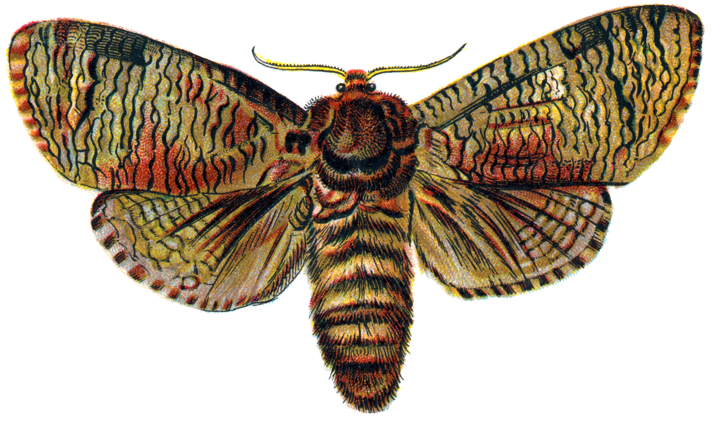
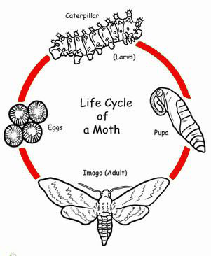
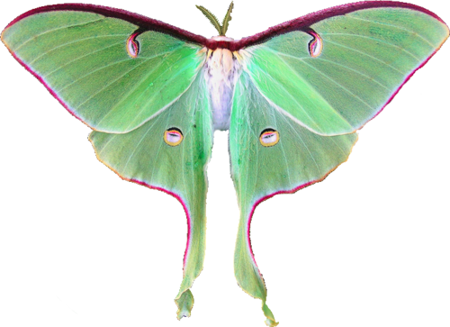
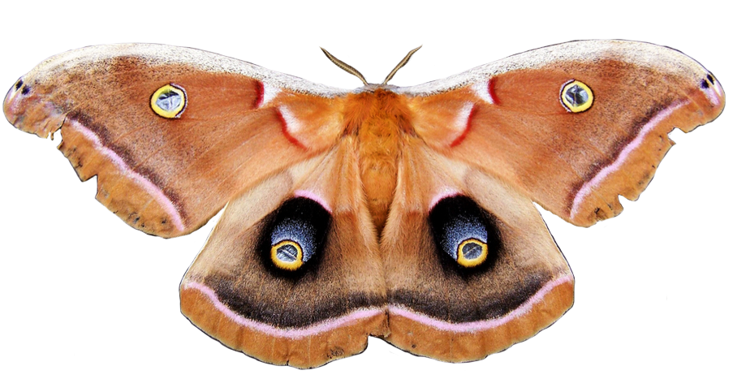
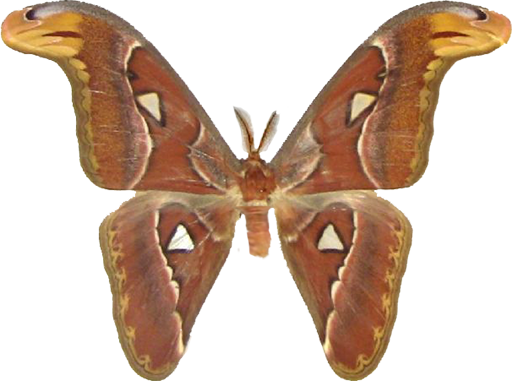

Klasifikasi

| Filum |
: |
Arthropoda |
| Upafilum |
: |
Hexapoda |
| Kelas |
: |
Insecta |
| Upakelas |
: |
Pterygota |
| Upakelas (tanpa takson) |
: |
Metapterygota |
| Infrakelas |
: |
Neoptera |
| Infrakelas (tanpa takson |
: |
Eumetabola |
| Superordo |
: |
Endopterygota |
| Ordo |
: |
Lepidoptera |
| Upaordo |
: |
Heterocera |
Ngengat adalah serangga yang berhubungan dekat dengan kupu-kupu dan kedua-duanya termasuk ke dalam Ordo Lepidoptera. Perbedaan di antara kupu-kupu dan ngengat lebih dari sekadar taksonomi.
Kadang nama Rhopalocera (kupu-kupu) dan Heterocera (ngengat) digunakan untuk memformalisasikan perbedaan mereka. Banyak usaha telah dilakukan untuk membagi ordo Lepidoptera menjadi kelompok
seperti Microlepidoptera dan Macrolepidoptera, Fenatae dan Jugatau, atau Monotrysia dan Ditrysia. Kegagalan dari nama ini untuk tetap berada pada penggolongan moderan karena tidak ada dari penggolongan tersebut merepresentasikan sepasang kelompok monofiletis.
Pada kenyatannya, kupu-kupu adalah kelompok kecil yang muncul dari "ngengat".
Kebanyakan spesies ngengat giat pada malam hari, tetapi ada juga yang giat pada petang dan pagi, serta yang giat pada siang hari.

Metamorfosis ngengat yaitu dimulai dari telur -> larva (ulat) -> kepompong -> ngengat dewasa.
Tahapan daur ngengat yang menguntungkan adalah pada daur ulat, ulat sutra akan mengeluarkan semacam cairan dari kelenjar dimulutnya, cairan tersebut akan mengeras menjadi struktur mirip benang yang digunakan oleh ulat membentuk selonsong, yang dikenal dengan kokon, sebagai tempatnya untuk menjadi kepompong. Nantinya saat kepompong sutra menetas, dari kokon tersebut akan meninggalkan benang sutra yang dapat diolah menjadi bahan tekstil.
Tahapan daur ngengat yang merugikan adalah pada daur ulat, karena pada daur ulat ngengat akan memakan dan menghabiskan banyak daun murbei.
Fakta
Perbedaan Ngengat dan Kupu - Kupu
Pada awalnya saya sendiri belum tahu perbedaan Ngengat dan Kupu - Kupu, bahkan menganggapnya sama. Padahal perbedaannya dapat terlihat jelas.
Ngengat memiliki bulu di bagian antena depannya. Mereka memiliki tubuh yang berbulu tebal. Biasanya mereka aktif pada malam hari dan beristirahat pada siang hari, akan tetapi mereka juga terkadang dapat ditemukan pada siang hari.
Kamuflase Pada Ngengat
Tentunya semua orang pasti tahu apa itu Kamuflase, yaitu pertahanan yang hebat dalam menghindari deteksi oleh pemangsa yang lapar. Beberapa mereka terlihat seperti lumut, ada juga seperti kulit pohon.
Beberapa Ngengat adalah Penyerbuk Penting
Mungkin beberapa dari kita mengira kalau penyerbuk itu hanyalah seperti kupu - kupu ataupun lebah. Tetapi ngengat pun merupakan penyerbuk yang penting.
Tanaman Yucca memerlukan bantuan Ngengat Yucca untuk menyerbuki silang bunga mereka, dan setiap spesies tanaman Yucca memiliki mitra ngengatnya sendiri.
Galeri


